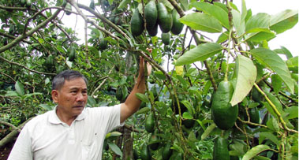
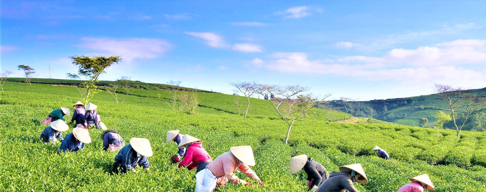

Nông sản "rớt giá" - nông dân đối mặt khó khăn
Những ngày qua, giá cả các mặt hàng nông sản Ðà Lạt giảm mạnh cùng với nhiều diện tích rau thương phẩm đối diện với tình trạng dịch bệnh, gây ảnh hưởng không nhỏ đến tình hình sản xuất cũng như đời sống của nông dân.
Vườn khoai tây đang trong thời kỳ thu hoạch của gia đình bà Nguyễn Thị Tuyết Linh, ngụ tại thôn Đa Lộc, xã Xuân Thọ, thành phố Đà Lạt, bà Linh cho biết diện tích này được bà xuống giống cách đây 3 tháng với chi phí đầu tư hơn 50 triệu đồng. Những tưởng sau khi thu hoạch, diện tích này sẽ đem về nguồn thu nhập khá cao cho gia đình, tuy nhiên với tình trạng rớt giá như hiện nay, bà chỉ có thể lấy lại tiền vốn đầu tư mà không có lãi. Bà Nguyễn Thị Tuyết Linh - nông dân xã Xuân Tho,̣ TP Đà Lạt chia sẻ: Mùa vụ năm nay trồng nhiều nhưng giá thì quá thấp, sau 3 tháng thì thua lỗ, giá năm nay chỉ bằng một nửa năm ngoái
Không chỉ có khoai tây, mà hiện nay nhiều mặt hàng nông sản cũng giảm giá mạnh, như cà rốt, hành tây, ớt chuông, bắp cải… Nhiều nhà vườn cho biết, hiện giá khoai tây đẹp đang được thương lái thu mua từ 4.500 đến 5.000 đồng/kg, cà rốt 5.000 đồng/ kg, hành tây 3.000 đồng/kg, cải thảo, sú chỉ 4.000 đồng/kg, ớt chuông 15.000 đồng/kg. Hiện mức giá này đang thấp một nửa so với thời điểm trước đây
Còn anh Phan Thanh Hương - nông dân Phường 7, TP Đà Lạt cũng cho rằng: Nói chung giá năm nay xuống quá thấp, làm không có lời, mong muốn ngành chức năng có những giải pháp làm sao để hàng chúng tôi làm ra tiêu thụ được. Mong nông sản của bà con được xuất khẩu đi và được giá hơn để ổn định đời sống, nâng cao thu nhập, chứ làm cả vụ mà giá xuống thấp quá thì bà con thực sự khó khăn
Không chỉ có khoai tây, mà hiện nay nhiều mặt hàng nông sản cũng giảm giá mạnh, như cà rốt, hành tây, ớt chuông, bắp cải… Nhiều nhà vườn cho biết, hiện giá khoai tây đẹp đang được thương lái thu mua từ 4.500 đến 5.000 đồng/kg, cà rốt 5.000 đồng/ kg, hành tây 3.000 đồng/kg, cải thảo, sú chỉ 4.000 đồng/kg, ớt chuông 15.000 đồng/kg. Hiện mức giá này đang thấp một nửa so với thời điểm trước đây